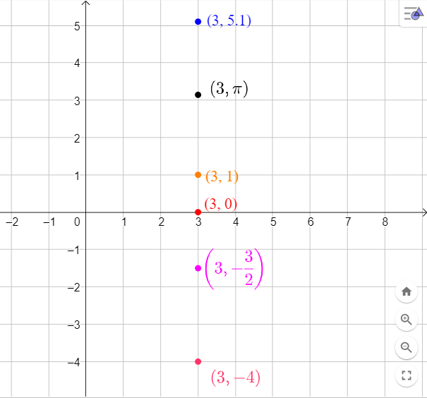
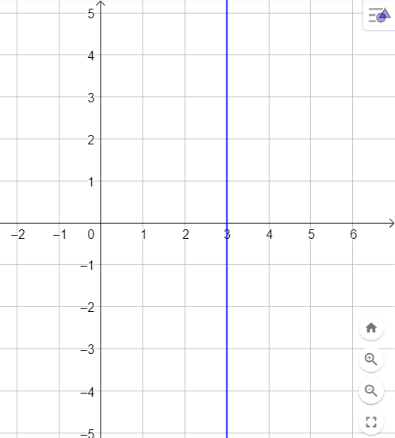

Nel piano cartesiano ogni punto viene associato ad una coppia di coordinate \((\color{blue}{}x\color{black}{}\,;\,\,\color{red}{}y\color{black}{})\).
La coodinata \(\color{blue}{}x\) indica la distanza orizzontale del punto dall'asse \(y\). Il punto si troverà
a destra dell'asse \(y\) se la coordinata è positiva
a sinistra dell'asse \(y\) se la coordinata è negativa.
La coodinata \(\color{red}{}y\) indica la distanza verticale del punto dall'asse \(x\). Il punto si troverà
sopra l'asse \(x\) se la coordinata è positiva
sotto l'asse \(x\) se la coordinata è negativa.
Provate a disegnare qualche punto attraverso lo strumento che trovate qui sotto. Inserite il valore
delle coordinate \(x\) ed \(y\) e premete il pulsante centrale.
\(x = \,\,\,\)
\(y = \,\,\,\)
\(-5\)
\(5\)
Insiemi di punti caratterizzati da una proprietà
Negli esempi che seguono inventeremo una proprietà riguardante le coordinate \(x\) ed \(y\) di un punto e rappresenteremo sul
piano cartesiano tutti i punti che soddisfano tale proprietà.
Da questo "gioco" nascerà tutta la matematica che ci terrà impegnati nei prossimi mesi ()
Esempio 1
Rappresentiamo sul piano cartesiano tutti i punti che hanno coordinata \(x\) uguale a \(3\).
Elenchiamo di seguito una manciata di punti che soddisfino tale proprietà:

Tutti i punti risultano allineati. Se disegnamo tutti i punti che hanno coordinata \(x = 3\) otterremo la
retta verticale rappresentata in figura

Esempio 2
Rappresentiamo sul piano cartesiano tutti i punti che hanno coordinata \(y\) uguale alla coordinata \(x\).
Elenchiamo di seguito una manciata di punti che soddisfino tale proprietà: